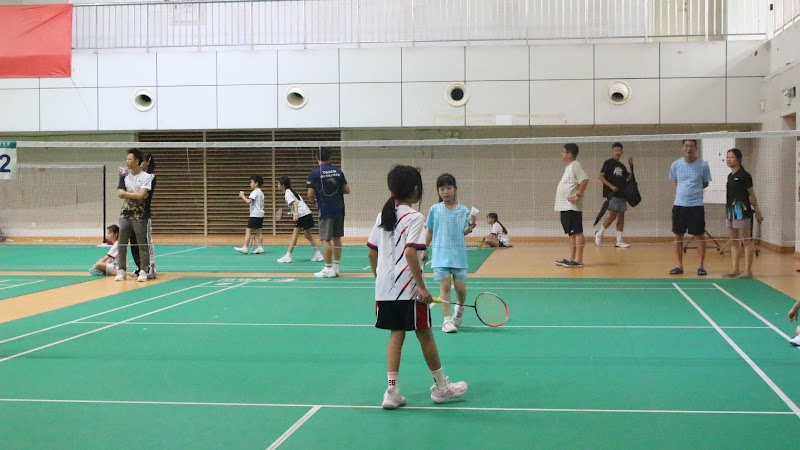
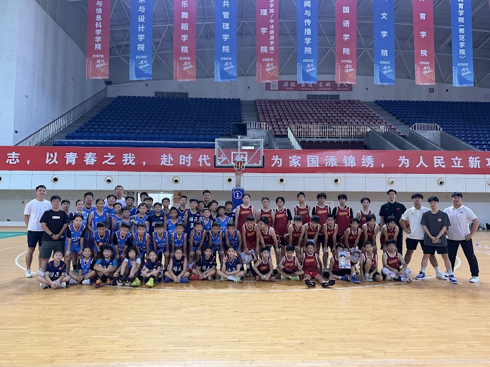
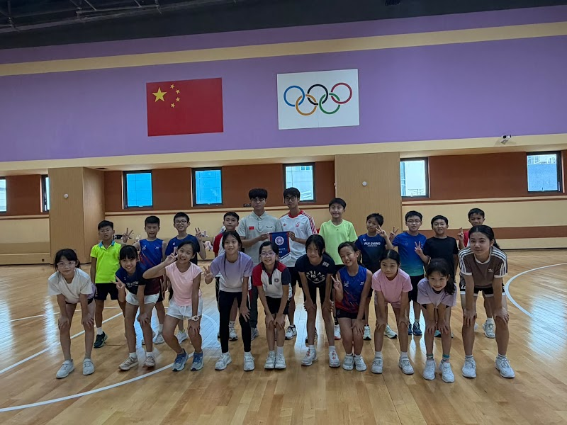

01 / CONNECT
以運動建立交流
透過校對校及球會連結，尋找程度合適的對手。友誼賽讓學生在實戰中學習，亦有機會認識來自不同背景的新朋友。



這次旅程
交流團連繫當地學校及球會，讓學生參與不同運動的訓練與友誼賽。活動按隊伍水平及大型團隊的實際需要編排，讓交流不局限於一場比賽。
透過校對校及球會連結，尋找程度合適的對手。友誼賽讓學生在實戰中學習，亦有機會認識來自不同背景的新朋友。

按運動項目及學生程度配對場地與教練。訓練可配合個人技術提升、團隊合作或友誼賽前準備，不會固定由同一位教練或同一個場地提供。


多元運動讓不同隊員都能參與，接觸新的活動環境。旅程亦為學生提供練習自理、獨立及適應陌生地方的機會。

球場以外
運動只是起點。與同學一同出行，學生有機會在合適支援下管理日常生活、照顧個人物品、溝通及應對新環境。其他行程亦可按學習目標加入文化交流和景點參觀。
我們如何支援團隊
按需要配對運動、場地、教練、對手及訓練水平。
可統籌機票、住宿、交通及旅遊保險。
與持牌旅行社合作；領隊及導遊按團隊人數和行程配置。
可按目標加入學校探訪、文化交流及景點參觀。
策劃你的團隊行程